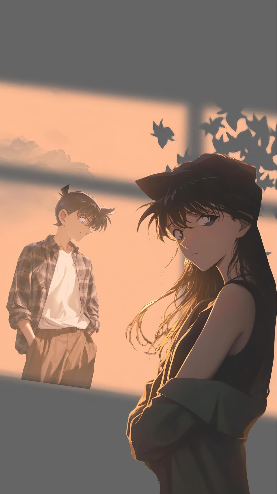
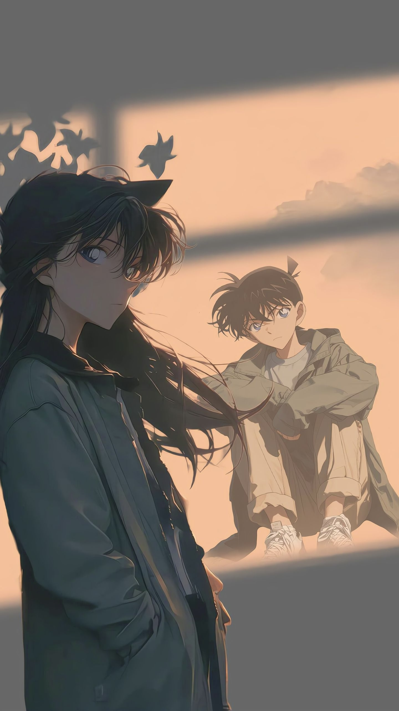
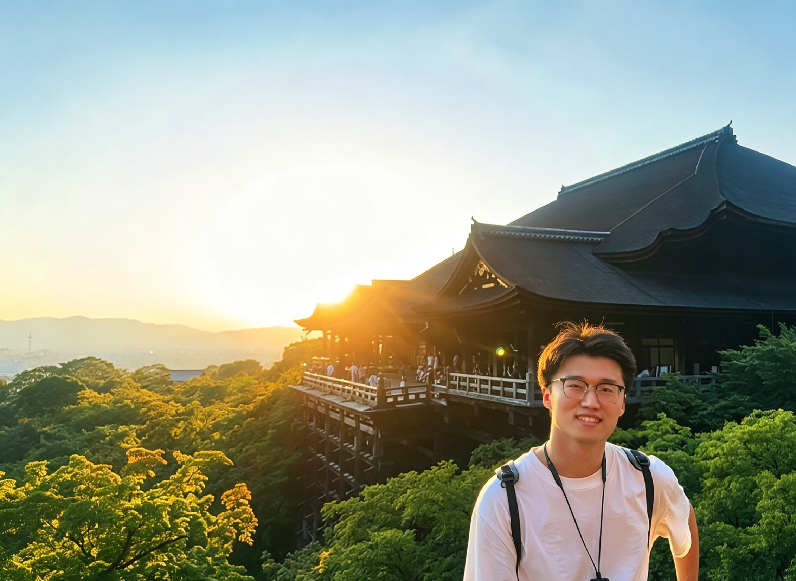
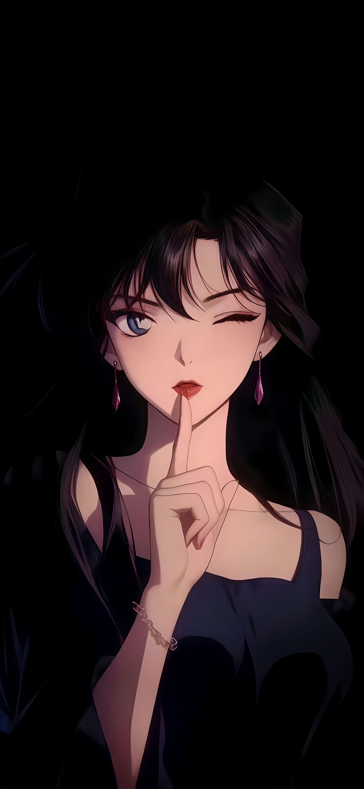
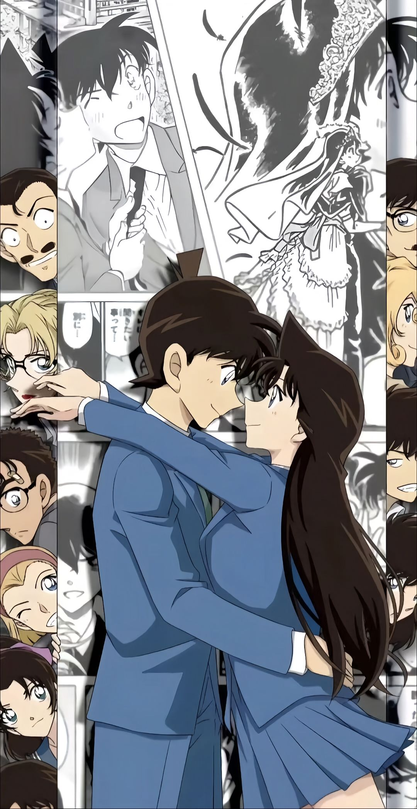

本科毕业于东北大学自动化专业，现为浙江大学电子信息专业硕士在读。
目前在淘天集团 · 阿里妈妈展示广告团队实习，探索大语言模型对用户需求理解与广告推荐效果的提升。
也在大模型推理、计算机视觉与工业时序控制等方向做过一些探索。获得 Kaggle 金牌（Rank 7/3805），以第一作者发表或录用论文 2 篇，并申请发明专利 2 项。
工作之余，是新兰的忠实粉丝。新一和小兰的故事，是关于等待、信念和守护的最美注脚。
随便你跑去哪里都没关系，
就算是天涯海角，我都会把你找到的。
从中原出发，经北国，至江南 —— 一路求索，从学术研究走向工业实践
这里记录我在广告推荐、计算机视觉与工业智能方向的一些探索与实践。

工作中是理性的算法工程师，生活里是感性的理想主义者。
像新一一样追求真相与逻辑，也像小兰一样相信等待和守护的力量。
喜欢读科幻与推理小说，享受在逻辑与想象之间游走。东野圭吾和阿西莫夫是常伴书单。
享受解决问题的成就感。从 Robocon 机器人赛场到 Kaggle 数据竞技场，都是心跳加速的战场。
柯南剧场版是每年的必看仪式，也会追各种热门番剧。新兰党，永远的白月光。
日常听流行音乐，偶尔也听日系 City Pop。耳机是 coding 时的标配。
球场上的快节奏对抗是最好的放松方式。一记扣杀或一次完美旋球，和解出一道算法题一样畅快。
偏爱温暖的氛围——午后咖啡、黄昏散步、深夜 coding。相信好的作品需要沉淀和耐心。
不管你在哪里，我一定会去找你的。
